ClinicusMed · Plexo Lumbar, Plexo Sacro e Nervio Ciático · Ficha Padronizada
Os nervos do membro inferior nascem do plexo lumbossacro, formado pelos ramos anteriores dos nervios raquídeos lombares e sacros. Esse plexo se organiza em 2 partes: o plexo lumbar (L1-L4), situado no espessor do músculo psoas, e o plexo sacro (L4-S3), situado na face anterior do sacro, diante do músculo piriforme. Juntos, eles inervam toda a pele, músculos e articulações do membro inferior — da virilha até o pé. Essa ficha usa diagramas reais da cátedra com ênfase visual máxima.
Ao final dessa ficha, você será capaz de definir o conceito de plexo nervoso e identificar os ramos anteriores que formam o plexo lumbossacro; descrever a constituição anatômica do plexo lumbar (L1-L4) e seus ramos terminais (nervio femoral, obturador, cutâneo femoral lateral, genitofemoral); descrever a situação e a constituição anatômica do plexo sacro (L4-S3) e seus ramos colaterais anteriores e posteriores; traçar a formação do nervio ciático e sua divisão em nervio tibial e nervio peroneo (fibular) comum; e reconhecer os territórios de inervação cutânea do membro inferior, nas vistas anterior e posterior.
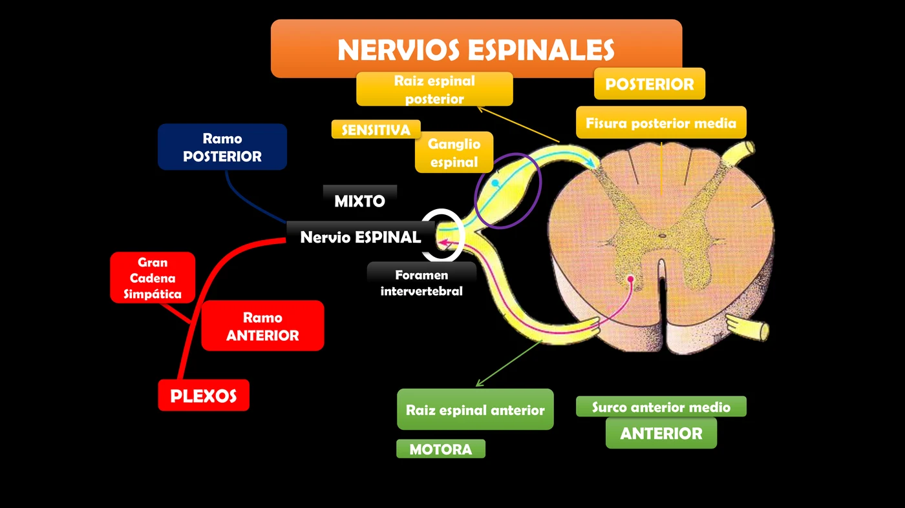
Em anatomia, plexo (do latim plexus, "trança") é a rede formada por vários ramos ou filetes nervosos dos ramos anteriores dos nervios raquídeos (espinais). Cada nervio espinal nasce da união de uma raiz posterior (sensitiva, com o gânglio espinal) e uma raiz anterior (motora), tornando-se um nervio mixto ao sair pelo forame intervertebral. Ele se divide então em um ramo posterior (pele e músculos do dorso) e um ramo anterior — são os ramos anteriores de L1 a S3 que se entrelaçam formando o plexo lumbossacro.
Os nervios do membro inferior estão dispostos em 2 planos:
| Plano Anterior | Plano Posterior | |
|---|---|---|
| Origem | Plexo Lumbar | Plexo Sacro |
| Chegada ao membro inferior | Por diante da articulação do quadril | Por detrás da articulação do quadril |
| Território principal | Face anterior da coxa | Face posterior da coxa e quase toda a perna/pé |
| Ramo terminal principal | Nervio Femoral (Crural) | Nervio Ciático (ciático maior) |
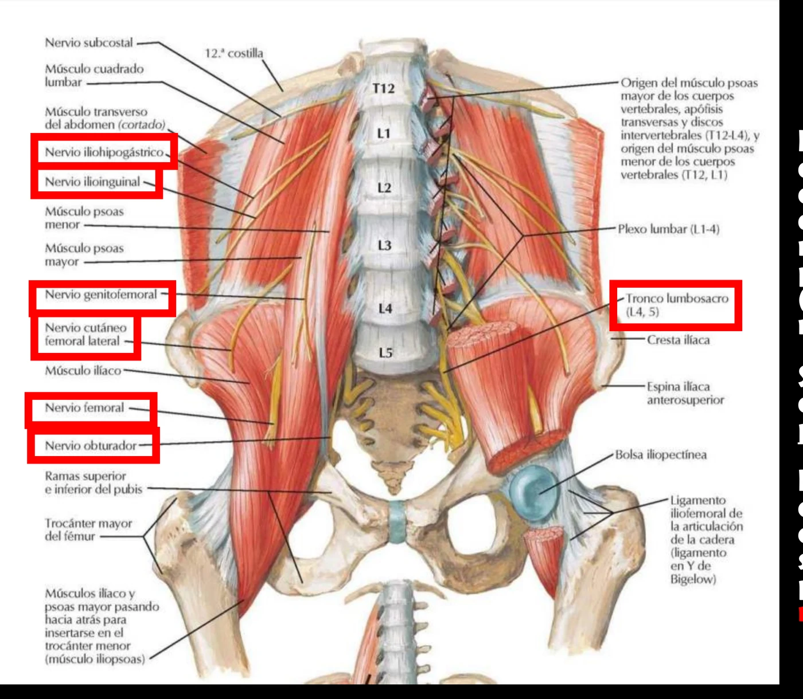
O plexo lumbar é formado pelo conjunto de comunicações que unem entre si, antes da sua distribuição periférica, os ramos anteriores dos 3 primeiros nervios lumbares (L1, L2, L3) e uma parte do ramo anterior de L4. Situa-se entre os 2 planos de inserção do músculo psoas. Por meio dos ramos colaterais e terminais, contribui para a inervação sensitiva, motora e proprioceptiva do tronco e do membro inferior.
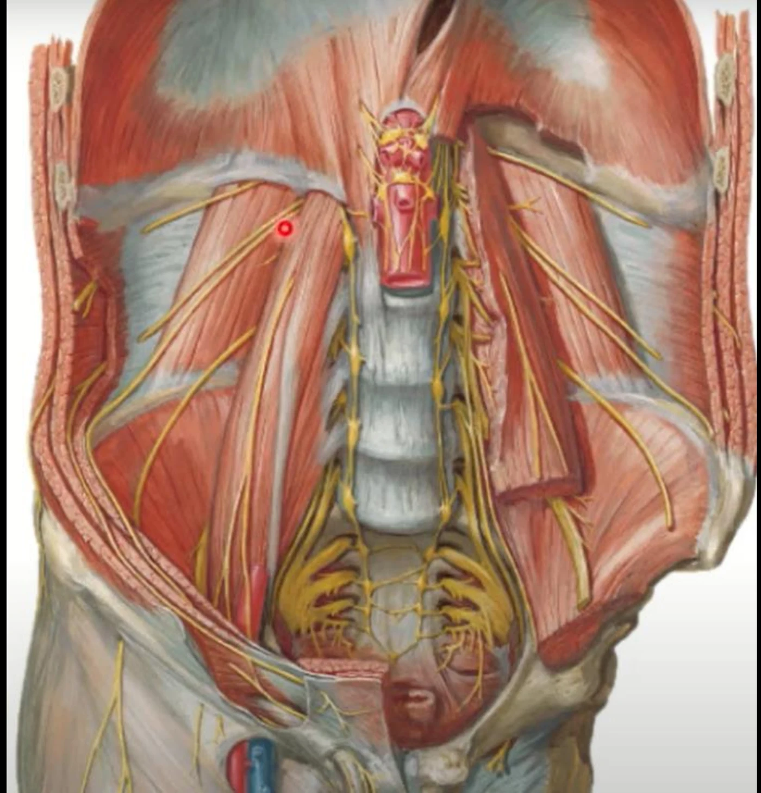
| Raiz | Constituição |
|---|---|
| L1 | Comunica-se acima com T12 e abaixo com L2; dá 2 ramos terminais — os nervios iliohipogástrico e ilioinguinal |
| L2 | Comunica-se com L1 e L3; dá 2 ramos terminais — lateralmente o cutâneo femoral lateral, medialmente o genitofemoral |
| L3 | Comunica-se com L2; fornece um ramo de origem ao nervio obturador e um ramo de origem ao nervio femoral |
| L4 | Comunica-se com L5 para formar o tronco lumbossacro; envia um ramo ao nervio femoral; dá origem ao nervio obturador |
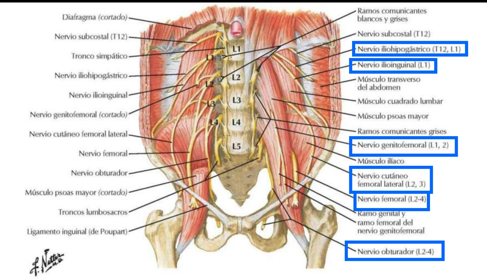
| Ramos Terminais | Raízes |
|---|---|
| Nervio Femoral | L2, L3 e L4 |
| Nervio Obturador | L2, L3 e L4 |
| Nervio Cutâneo Femoral Lateral | L2 e L3 |
| Nervio Genitofemoral | L1 e L2 |
| Ramos Colaterais | Detalhe |
|---|---|
| Ramos curtos | Para os músculos psoas e quadrado lombar |
| Nervio Iliohipogástrico e Ilioinguinal | T12-L1 — parede anterolateral do abdome e região inguinal |
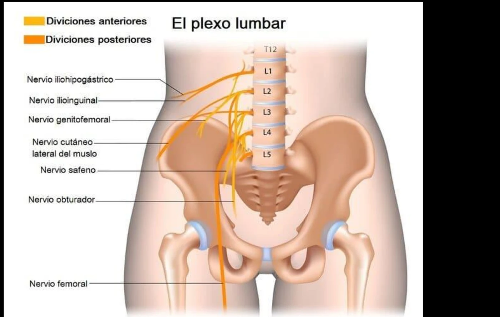
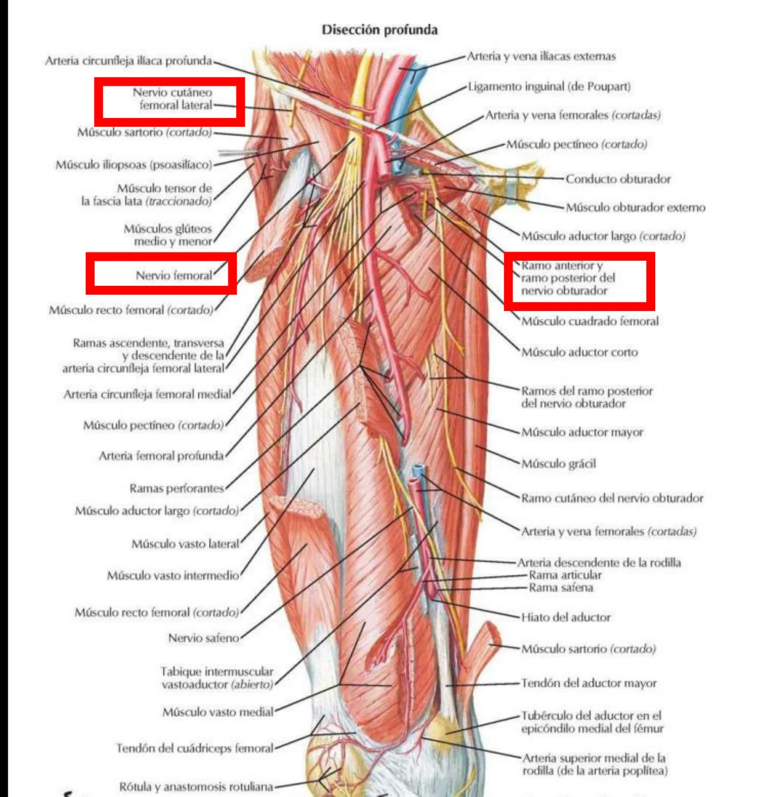
O nervio femoral (crural) é o maior ramo do plexo lumbar — desce entre os músculos psoas e ilíaco, passa por diante da articulação do quadril e entra na coxa, inervando o músculo quadríceps femoral e a pele da face anterior da coxa; seu ramo terminal cutâneo, o nervio safeno, acompanha a face medial da perna até o pé.
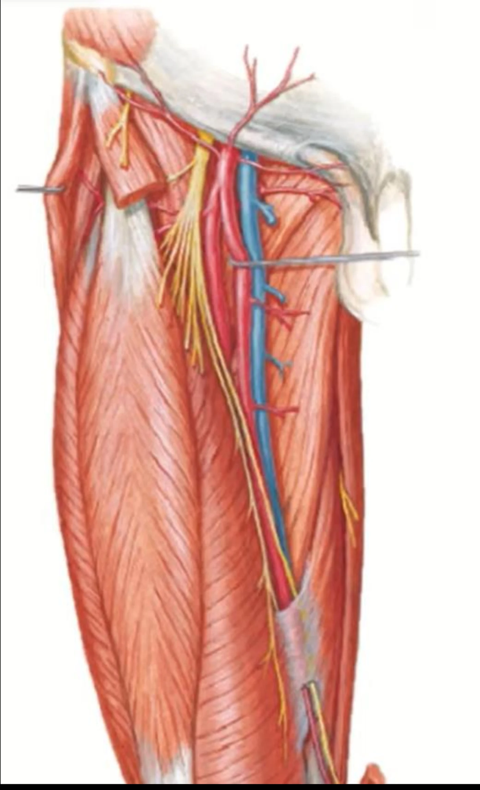
O nervio obturador atravessa o conduto obturador (junto com a artéria e veia obturatórias) e se divide em ramo anterior e ramo posterior, inervando os músculos adutores da coxa e uma pequena área de pele na face medial da coxa.
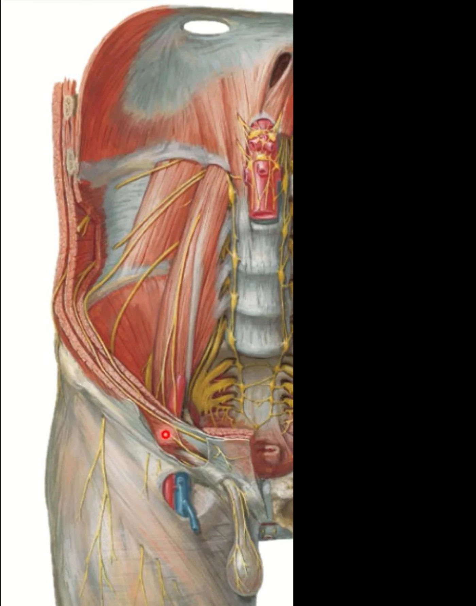
O plexo sacro é formado pelo tronco lumbossacro (L4-L5) e pelos ramos anteriores dos 3 primeiros nervios sacros (S1, S2, S3). Por meio de seus ramos colaterais e terminais, contribui para a inervação sensitiva, motora e proprioceptiva da região glútea e do membro inferior.
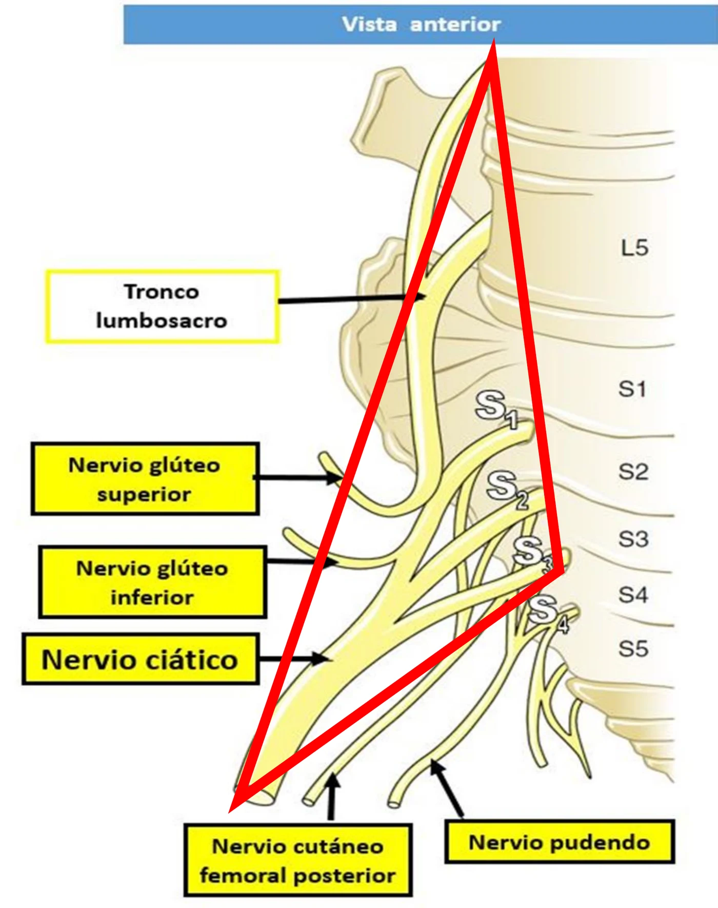
| Raiz | Constituição |
|---|---|
| Tronco Lumbossacro | Constituído por L5, que recebe um ramo comunicante de L4; também se comunica com S1 |
| S1 | Recebe o tronco lumbossacro e se une obliquamente com S2 para constituir o nervio ciático |
| S2 | Une-se obliquamente com S1 e envia um ramo vertical para S3 |
| S3 | Recebe o ramo vertical de S2 e constitui o elemento essencial do nervio pudendo |
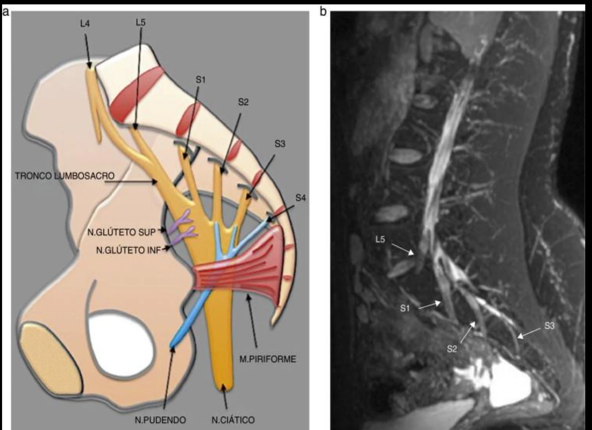
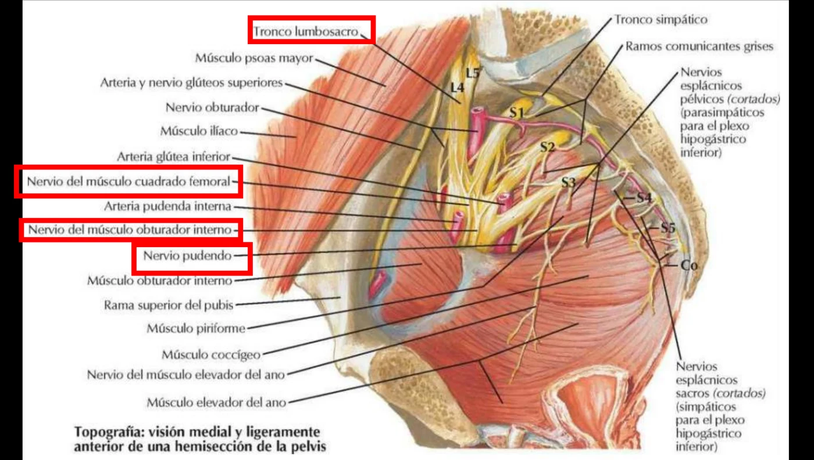
| Ramos Colaterais Anteriores | Ramos Colaterais Posteriores |
|---|---|
| Nervio do m. quadrado femoral e do gêmeo inferior | Nervio glúteo superior |
| Nervio do m. obturador interno e do gêmeo superior | Nervio glúteo inferior |
| Nervios esplâncnicos pélvicos | Nervio do músculo piriforme |
| Nervio cutâneo femoral posterior | Nervio cutâneo femoral posterior |
| Nervio retal inferior | Nervio cutâneo perfurante |
| Nervios do m. elevador do ânus e m. coccígeos | |
| Nervio pudendo |
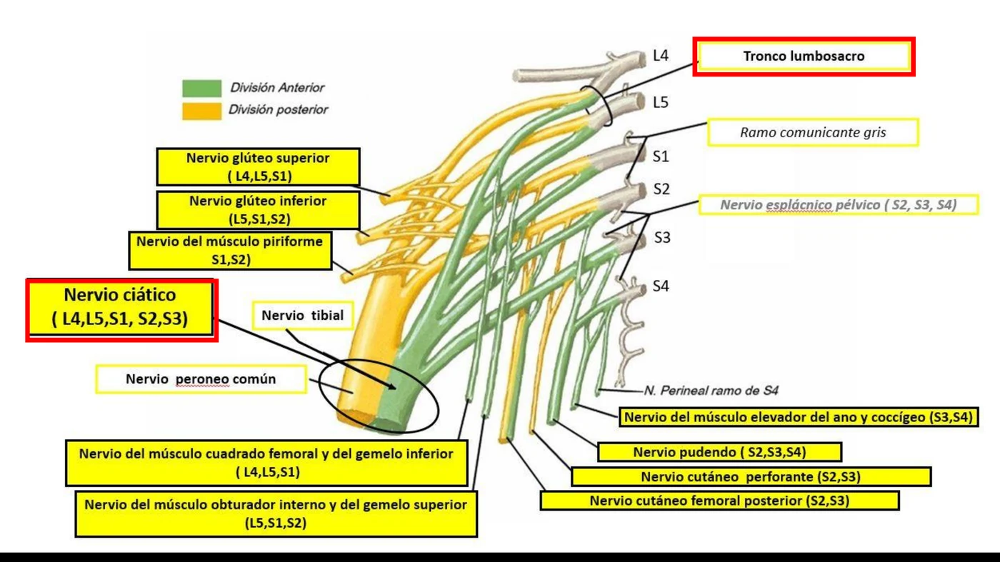
O nervio ciático (L4, L5, S1, S2, S3) é o ramo terminal do plexo sacro e o maior nervio do corpo humano. Ao longo de seu trajeto na coxa posterior, já carrega 2 componentes distintos — a divisão anterior (futuro nervio tibial) e a divisão posterior (futuro nervio peroneo comum) — que se separam definitivamente próximo à fossa poplítea, formando o nervio tibial e o nervio peroneo (fibular) comum.
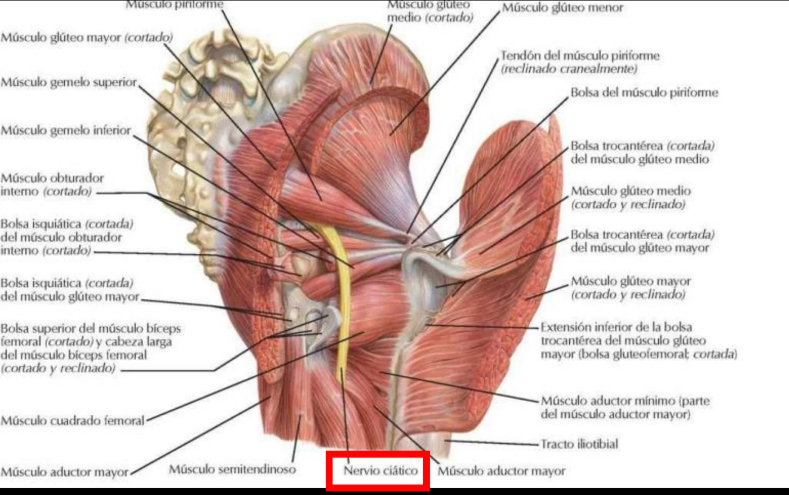
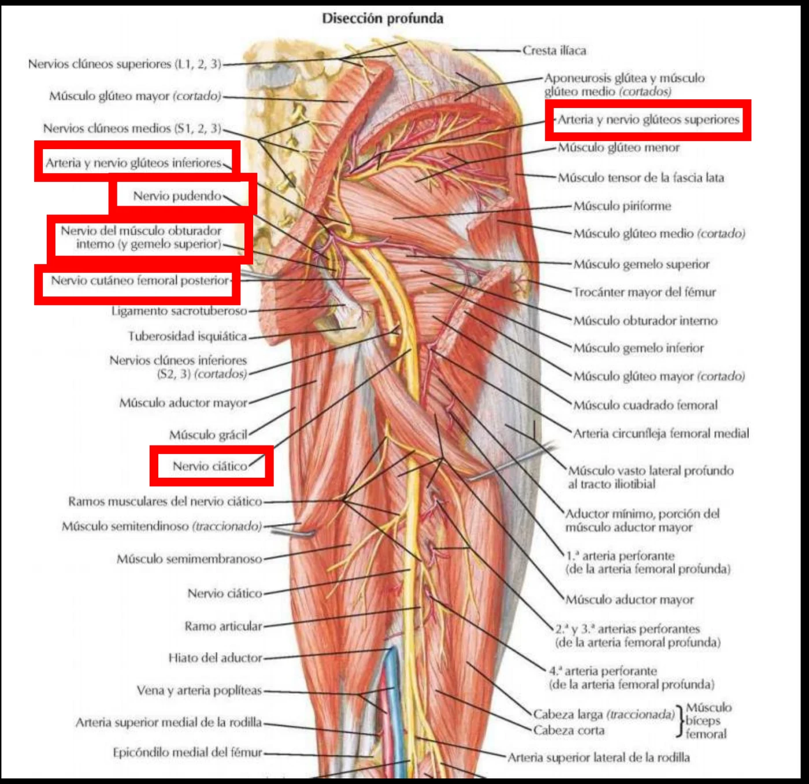
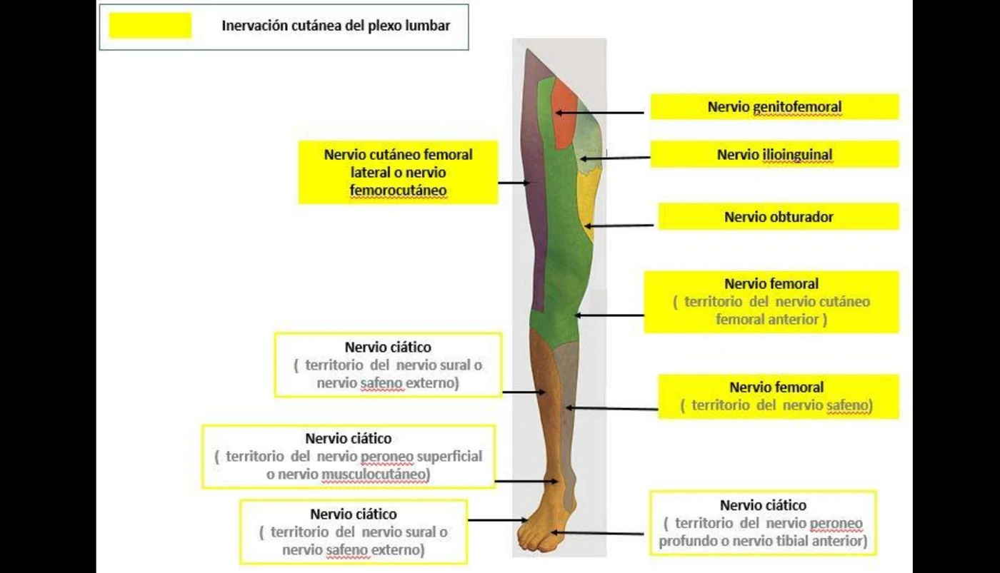
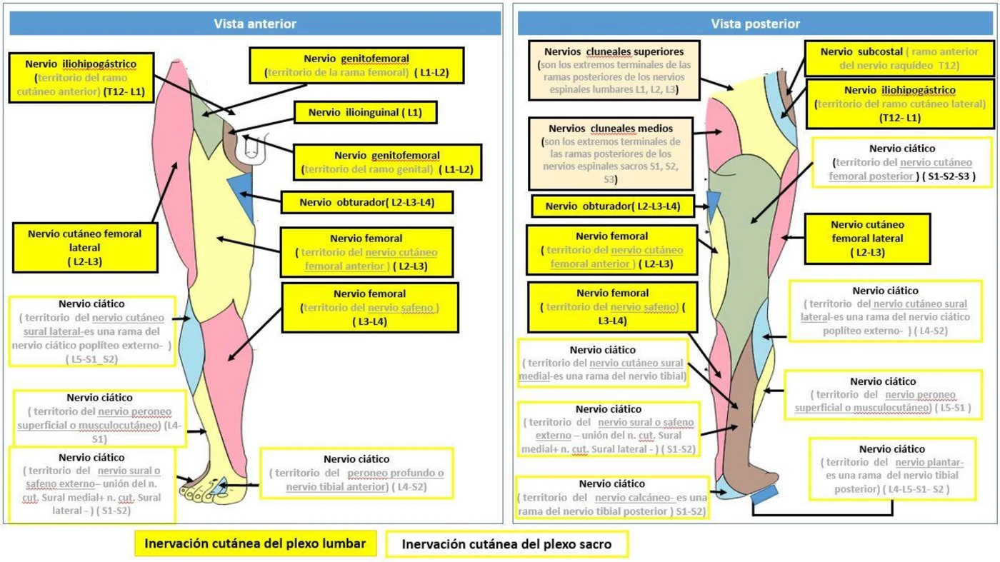
Cada território de pele do membro inferior é coberto por um ramo específico do plexo lumbar ou do plexo sacro — reconhecer esses territórios na prova de imagem é tão importante quanto saber a origem radicular de cada nervio.
| Território | Nervio |
|---|---|
| Face anterolateral da coxa | Nervio cutâneo femoral lateral (L2-L3) |
| Face anterior da coxa | Nervio femoral, ramo cutâneo femoral anterior (L2-L4) |
| Face medial da coxa | Nervio obturador (L2-L4) |
| Face medial da perna | Nervio femoral, território do nervio safeno (L3-L4) |
| Face posterior da coxa | Nervio ciático, território do nervio cutâneo femoral posterior (S1-S3) |
| Face lateral/posterior da perna e dorso do pé | Nervio ciático, território do nervio peroneo superficial (L4-S1) |
| Planta do pé | Nervio ciático, território do nervio plantar, ramo do nervio tibial (L4-S2) |
| Tema | Frequência |
|---|---|
| Raízes dos ramos terminais do plexo lumbar (femoral, obturador etc.) | 🔥🔥🔥🔥🔥 |
| Formação e raízes do nervio ciático (L4-S3) | 🔥🔥🔥🔥🔥 |
| Divisão do nervio ciático em tibial e peroneo comum | 🔥🔥🔥🔥 |
| Relação do nervio ciático com o músculo piriforme | 🔥🔥🔥🔥 |
| Ramos colaterais anteriores vs. posteriores do plexo sacro | 🔥🔥🔥 |
| Territórios de inervação cutânea do membro inferior | 🔥🔥🔥 |
| Constituição anatômica radicular (L1-L4, L4-S3) | 🔥🔥🔥 |
As raízes L4-S3 que formam o nervio ciático saem da coluna por forames intervertebrais que podem ser comprimidos por uma hérnia de disco.
O nervio ciático sai da pelve pela incisura isquiática maior, geralmente passando por baixo do músculo piriforme — em uma variante anatômica comum, parte ou todo o nervio atravessa o próprio ventre muscular.
O nervio cutâneo femoral lateral (L2-L3), exclusivamente sensitivo, atravessa a região da espinha ilíaca anterossuperior, próximo ao ligamento inguinal — uma área de relativo estrangulamento anatômico.
O nervio peroneo (fibular) comum, um dos 2 ramos terminais do nervio ciático, contorna superficialmente o colo da fíbula — um trajeto exposto que o torna o nervio periférico mais vulnerável à compressão externa do membro inferior.
O nervio obturador passa pelo conduto obturador, um trajeto estreito entre a pelve e a coxa medial, próximo ao colo do fêmur e à articulação do quadril.
16 imagens — diagramas da cátedra, ilustrações clássicas e correlação por ressonância magnética, cobrindo plexo lumbar, plexo sacro, nervio ciático e inervação cutânea do membro inferior. Toque em qualquer imagem pra abrir em tamanho grande (🔍 zoom).
23 rodadas de perguntas rápidas sobre testículo, epidídimo, vias espermáticas, próstata, uretra e pênis, 1 por vez, 60 segundos pra você responder mentalmente. A pergunta muda sozinha quando o tempo acaba (ou clica em "Já sei, próxima"). No final, você vê o gabarito completo de tudo.
O sistema guarda, no seu navegador, quais cards você já sabe bem e quais precisam voltar mais cedo — cada vez que você avalia um card, ele recalcula quando ele deve voltar.
18 questões cobrindo testículo, epidídimo, vias espermáticas, próstata, uretra e pênis. Escolhe uma alternativa, depois clica em "Ver comentário completo".